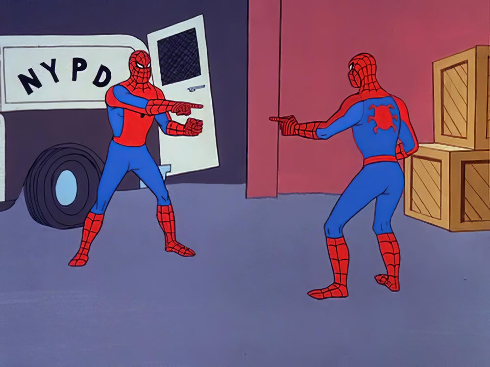

The History of Memes
Know Your Meme is a site that researches and documents Internet memes and viral phenomena. Founded in December of 2008, Know Your Meme's research is handled by an independent professional editorial and research staff and community members. In three years of its existence, the site grew to reach more than 9.5 million people every month and is considered the most authoritative source on news, history and origins of viral phenomena and Internet memes. In March of 2011, Cheezburger -- the company behind other Internet phenomena such as FAIL Blog, I Can Has Cheezburger?, and The Daily What -- acquired Know Your Meme from Rocketboom, LLC. Know Your Meme is located in Cheezburger's New York City offices in Manhattan. Much like wikis, any registered member can submit a meme or viral phenomena for research at knowyourmeme.com. Other members may contribute to the research of the topic, archival of notable media or discussion about a meme. The editorial staff and moderators then evaluates each entry by further researching the online presence of the meme for confirmation or invalidation. For more information, please refer to our Rules and Guidelines. The editorial staff also provides interviews or Q&As with subjects of memes or notable individuals who are involved with the meme culture. Know Your Meme's research and reporting has appeared in major news publications and outlets, including the New York Times, Los Angeles Times, The Wall Street Journal, NPR, PBS, CNN, MSNBC, Wired, TIME, Newsweek, The Atlantic, The Guardian, The Telegraph, Le Nouvel Observateur, Le Monde, Der Spiegel and The Estadao among others. Know Your Meme has also earned several recognitions and awards for its research including TIME Magazine's 50 Best Websites of 2009, the 2010 Streamy Award for Best Guest Star in a Web Series and the 2012 Webby Award for Best Cultural Blog. In 2014, Know Your Meme was inducted into the Web Archiving Program run by The American Folklife Center at the U.S. Library of Congress.Other Amazing Memes

